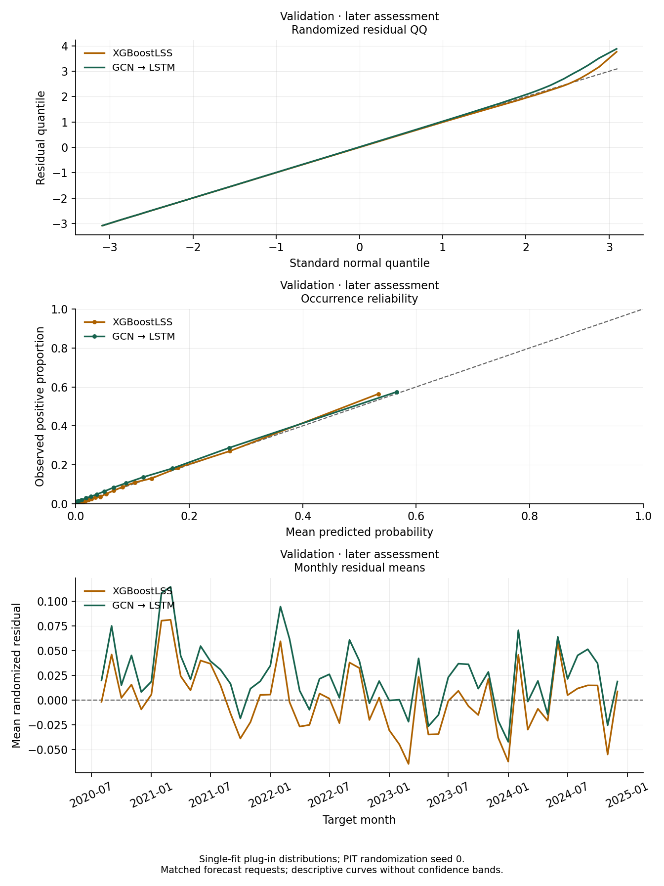
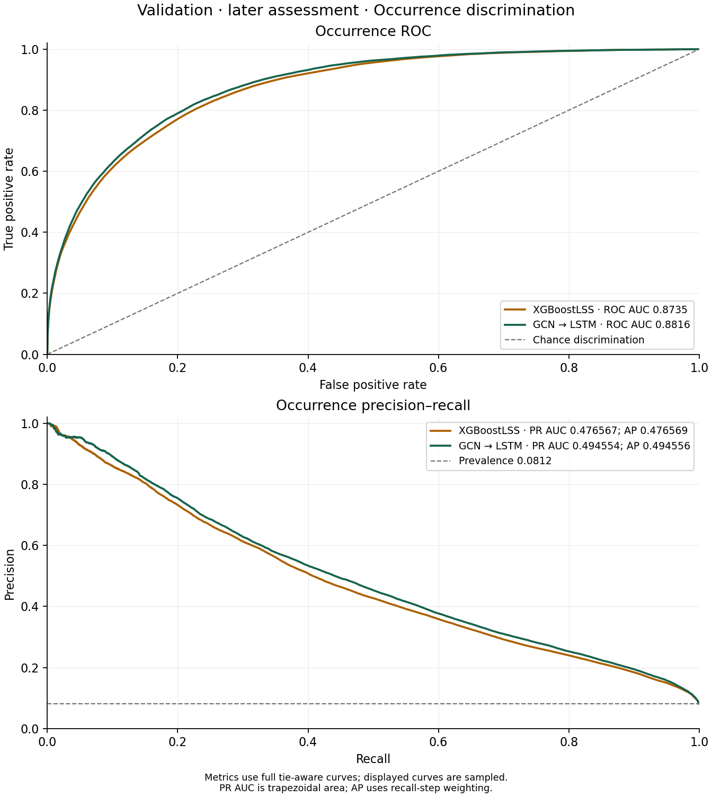

Results and Discussion
Validation of the selected forecast examples
1 Assess the fixed examples
The Comparison chapter brings together train/test evidence for the selected XGBoostLSS and GCN–LSTM examples. Here validation assesses those fixed fits afterwards. It does not select an architecture, checkpoint, or replacement winner.
A limited search and one fit per example do not establish a definitive class ranking. The response measures satellite-detected burned area, with the observation and coverage limitations described in the data chapter.
2 Validation scores and diagnostics
The score definitions and residual construction are the same as in Comparison. NLL and CRPS describe saved plug-in hurdle distributions. They do not quantify parameter uncertainty or uncertainty in the neural model’s mean-feedback path.
Validation assesses the two fixed forecast examples on matching forecast requests.
| Split | Model | Forecast requests | NLL | CRPS | Expected-fraction MAE | Occurrence Brier |
|---|---|---|---|---|---|---|
| Validation | XGBoostLSS | 1,566,432 | -0.233298 | 0.0002068 | 0.0003285 | 0.055992 |
| Validation | GCN → LSTM | 1,566,432 | -0.233627 | 0.0002080 | 0.0003357 | 0.054928 |
Residual summaries use the same randomized residuals as the plots. Undefined correlations are shown as an em dash.
| Split | Model | Residual mean | Residual SD | County-mean Moran I | Monthly lag-1 r |
|---|---|---|---|---|---|
| Validation | XGBoostLSS | -0.001 | 1.002 | 0.137 | 0.205 |
| Validation | GCN → LSTM | 0.023 | 1.027 | 0.185 | 0.202 |

On validation, the models’ NLLs are much closer than on test, and XGBoostLSS continues to have the lower CRPS. These are descriptive comparisons under different scoring rules, without a significance or winner claim.
Both models’ validation QQ curves bend above the reference line in the upper tail, indicating a departure from the reference residual distribution there. Occurrence reliability and monthly residual means provide complementary calibration checks.
Compare the two models within this split on their matched requests. Its longer averaging period can change county-mean Moran’s I by reducing transient variation; an increase from test is not evidence of increased underlying dependence. Counties, repeated targets, and overlapping horizons remain dependent, so these plots carry no nominal row-independence tests or confidence bands.
3 Occurrence ranking on validation
The test ROC and precision–recall curves provide development evidence. Here the same comparison is made on validation after both representatives have been fixed.

PR AUC and AP use different integration conventions and are labeled separately. Precision–recall comparisons across periods also depend on the positive-response rate, which differs between test and validation. Compare the models within each period before interpreting a change across periods. Occurrence ranking does not by itself establish calibration or accuracy for positive burned-area magnitudes.
The graph-and-sequence model retains the higher ROC AUC and both precision–recall summaries on validation. XGBoostLSS retains the lower CRPS. The ranking tradeoff seen during development therefore persists here, but the much smaller NLL difference cautions against treating an advantage in one period as a fixed class property.
4 Animated validation maps
The six maps compare XGBoostLSS (top), observations (middle), and GCN–LSTM (bottom) for the same county, target month, and forecast horizon. On the left, model colors show \(p_{\mathrm{occ}}\) and observed colors show binary presence or absence. On the right, model colors show \(\mu=E[Y\mid Y>0]\), the expected burned fraction given a positive detection; observed colors show the recorded burned fraction. A model’s conditional mean is shown for every county, including counties with no observed burn that month.
Choose a lead from one to twelve months, then play or scrub through target months. Each lead has 42 eligible origins because complete twelve-month target windows must fit within validation. The one-month series runs August 2020–January 2024; the twelve-month series runs July 2021–December 2024. Horizons are displayed separately. Probability colors use a fixed linear 0–1 scale. All three magnitude maps share a fixed logarithmic color transformation, including zero, to make small fractions visible; labels and inspected values remain in the original fraction units.
Loading validation maps…
XGBoostLSS · probability of a burn
XGBoostLSS · mean fraction given a burn
Observed · presence / absence
Observed · burned fraction
GCN–LSTM · probability of a burn
GCN–LSTM · mean fraction given a burn
Point to a county to inspect its values.
The observed left panel contains only the two endpoint colors. In the right panels, \(\mu\) is a conditional expectation, while the observed fraction is one realization and can be zero. Large observed burns can therefore be much darker than either model’s conditional mean. These maps complement the distributional scores; they are not maps of \(E[Y]=p_{\mathrm{occ}}\mu\).
5 Interpreting evidence
A small difference in mean score needs context: the target period, the size of the difference, the forecasting task, and the dependence among requests. An apparent advantage in one period need not persist in another. Temporal evaluation on these counties also does not establish performance on unseen counties.
6 Reproduce the analysis
Download the source, prepared inputs, and selected models, XGBoostLSS prediction parameters, and GCN–LSTM prediction parameters. The source archive contains a README with commands to reconstruct forecast requests, recompute the scores and diagnostics, generate the animations, and render the six chapters. It also includes the model fitting and tuning code, selected configurations, checkpoints, and environment specifications. The prepared panel retains the response, identifiers, and inputs consumed by these models.
The prediction downloads preserve the saved parameter precision and support reproducing the reported results without repeating stochastic training. The download manifest provides checksums; the result manifest records configurations, selection results, and numerical diagnostics. After extracting the source archive, keep all three downloads together and follow its README. The rendered site carries the files needed for these steps.
7 Future work
Prediction uncertainty needs a clear prediction law, assessment of parameter and fitting variability, and checks on the dependence needed for multi-month paths or regional totals. For the recurrent model, sampled future responses can propagate through the decoder to form joint paths; deterministic mean feedback does not perform that integration. Tail calibration needs particular attention given the validation QQ curves.
The observation pipeline also needs a documented rule for satellite QA flags and partially mapped county-months. Missing or invalid observations must not silently become zero burned area. That work may change the response and require another fit.
Seasonal baselines, regularized hurdle regressions, more extensive search, and repeated fits can help assess what extra complexity contributes. Origin-dated weather forecasts and other predictors can extend the information set when their release dates and publication delays are recorded. Evaluating operational data latency and holding out whole counties would address real-time use and transfer to unseen locations. If later diagnostic findings change the procedure, evaluate that revision on new data before claiming independent confirmation. The release’s result manifest records the inputs, fitted artifacts, score definitions, and checks behind this edition.